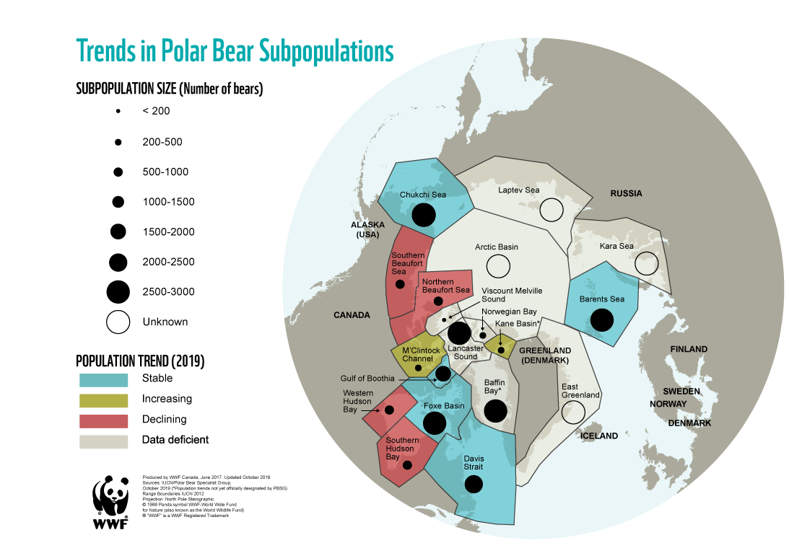

11 Species
11.1 Birds
Guardian
Researchers pored over data collected since the mid-60s in Britain and the Netherlands on 60 different species, including the house sparrow, the crested tit, the reed bunting, the bullfinch and the willow warbler. They zero in on how these birds have changed over time with regard to their egg-laying schedules, number of offspring and morphology.
The scientists investigated what proportion of changes over time were linked to warming, and whether warming affected some species or traits more than others, as well as whether other factors unrelated to temperature reinforced these effects.
Guardian (2022) Climate change fundamentally affecting European birds
McLean Abstract
Many wild populations are experiencing temporal changes in life- history and other phenotypic traits, and these changes are fre- quently assumed to be driven by climate change rather than nonclimatic drivers. However, this assumption relies on three con- ditions: that local climate is changing, traits are sensitive to climate variability, and other drivers are not also changing over time. Although many studies acknowledge one or more of these condi- tions, all three are rarely checked simultaneously. Consequently, the relative contribution of climate change to trait change, and the variation in this contribution across traits and species, remain unclear. We used long-term datasets on 60 bird species in Europe to test the three conditions in laying date, offspring number, and body condition and used a method that quantifies the contribu- tion of warming temperatures to changes in traits relative to other effects. Across species, approximately half of the magnitude of changes in traits could be attributed to rising mean temperature, suggesting that increasing temperatures are likely the single most important contributor to temporal trends and emphasizes the impact that global warming is having on natural populations. There were also substantial nontemperature-related temporal trends (presumably due to other changes such as urbanization), which generally caused trait change in the same direction as warming. Attributing temporal trends solely to warming thus overestimates the impact of warming. Furthermore, contributions from nontemperature drivers explained most of the interspecific variation in trait changes, raising concerns about comparative studies that attribute differences in temporal trends to species dif- ferences in climate-change sensitivity.
McLean (2022) Warming temperatures drive at least half of themagnitude of long-term trait changes inEuropean birds (pdf)
11.2 Polar Bear
Today
Polar bears are among the few large carnivores that are still found in roughly their original habitat and range–and in some places, in roughly their natural numbers.
Although most of the world’s 19 populations have returned to healthy numbers, there are differences between them. Some are stable, some seem to be increasing, and some are decreasing due to various pressures.
Status of the polar bear populations Updated 2019 with data from the IUCN Polar Bear Specialists Group
4 populations are in decline
2 populations are increasing
5 populations are stable
8 populations are data-deficient (information missing or outdated)
In the future
By 2040, scientists predict that only a fringe of ice will remain in Northeast Canada and Northern Greenland when all other large areas of summer ice are gone. This “Last Ice Area” is likely to become important for polar bears and other life that depends on ice.
A projection of sea ice in the archipelago, supported by WWF, shows that much of the region is facing significant ice loss in the coming decades - with potentially serious consequences for polar bears.
Global polar bear numbers are projected to decline by 30% by 2050.
Polar Bear Threatened at Svalbard
Dag Vongraven er ekspert på isbjørn. I elleve år har han ledet en internasjonal gruppe med spesialister på den hvite kjempen, International Union for Conservation of Nature (IUCN).
Før han nå gir ledervervet videre, tegner han et dystert bilde av isbjørnens fremtid.
– Jeg er redd for at den kommer til å være helt borte fra Svalbard om 50 år.
Vongraven mener vi nå er i starten av en periode som vil føre til isbjørnens utryddelse på Svalbard, om oppvarmingen fortsetter i samme tempo som de siste tiårene.
Årsaken til hans dystre spådom er polhavet og havisen som smelter raskere enn før.
Oppvarmingen skjer dobbelt så raskt som for 25 år siden.
Om femti år frykter Vongraven at flerårsisen vil være helt borte, og isbjørnen med den.
Lite havis = lite mat
Havisen er viktig for isbjørnen. Slik transporterer den seg mellom områder der det er mat og mellom steder der den kan finne hi, forteller isbjørneksperten.
– Isbjørn klarer ikke å fange ringsel på landet eller i vann. Den er tilpasset til å fange ringsel på isen, sier Vongraven.
Det finnes i dag rundt 26.000 isbjørner i verden, fordelt på 19 ulike delbestander. Barentshavbestanden er mellom 1900 og 3600 isbjørn, ifølge tall fra Norsk Polarinstitutt.
På Svalbard er det cirka 300 «fastboende» isbjørner.
– Det går linjer tilbake, fra Svalbardtraktaten i 1920, via Svalbardmiljøloven og fram til i dag der det står at man skal bevare dyrelivet på Svalbard. Isbjørnen er selve kroneksempelet på hvor viktig dette er.
Innen 50 år har gått så har vi to tredeler færre isbjørn. Den nye rødlistevurderingen fra gruppa jeg har ledet viser det samme. Det er store endringer, og det er forferdelig trist å jobbe med dette og se utviklingen vi står overfor.